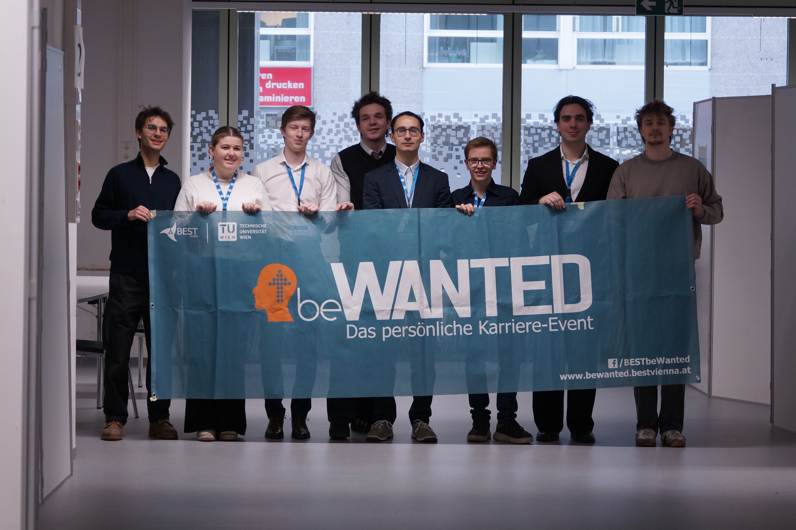

About Us
A student-run community at TU Wien connecting people across Europe — through events, friendships, and shared experiences.

Who We Are
We are roughly 20 students from many different nationalities at TU Wien, striving for development, making unique experiences, and having fun together.
We are part of a European-wide network — BEST: Board of European Students of Technology — spanning 84 Local BEST Groups across 30 countries. In short: a non-profit, non-political student organisation working for youth development, connecting people from different countries and helping everyone develop an international mindset.
Founded in 1989, BEST has grown into a community of over 4 000 volunteers bringing students and industry closer together across Europe.
Our Services
Throughout the year we organise local and international activities where students can grow their skills, improve their English, and have fun at the same time.

BEST Courses
Fully-funded 10-day academic courses hosted by BEST groups across Europe. Immerse yourself in cutting-edge topics, make lifelong friends, and explore a new country — all for free.

Social Events
Motivational Weekends, bonding trips, city adventures, and parties throughout the year. The perfect way to connect with fellow students and explore Austria and beyond.

beWANTED
Our flagship career fair bridging TU Wien students with top engineering and tech companies. From networking to on-site interviews — land your next internship or full-time position.
Why You Should Join
More than an organisation — a community that grows with you.
A Real Community
We are friends who work together, have fun together, and are always happy to welcome new people.
Student Experience
Many of us have been at TU Wien for years — we know how student life works and are happy to share that knowledge.
International Mindset
We all speak English (and German!) and connect you with a network spanning 30 European countries.
Organise Events
Learn hands-on how to plan, manage, and run events — from small meetups to international conferences.
Grow Your Skills
Leadership, communication, project management — the skills you build here complement everything you study.
Have Fun
Technical studies are hard — but don't forget to enjoy your time as a student! We make sure of that.
Ready to Join?
Apply to become a member and we will contact you with next steps. If you have questions, don't hesitate to reach out or drop by one of our weekly meetings.
Apply NowFind Us
HTU, Karlsplatz 13, Hof 1, Stiege 4, ground floor, 1040 Vienna
Office hours: every Wednesday 18:00–18:30
Weekly meetings at 18:30 — you are very welcome to join!
Note: No office hours or meetings during vacation or when the university is closed.
Or write us directly at vienna@best-eu.org